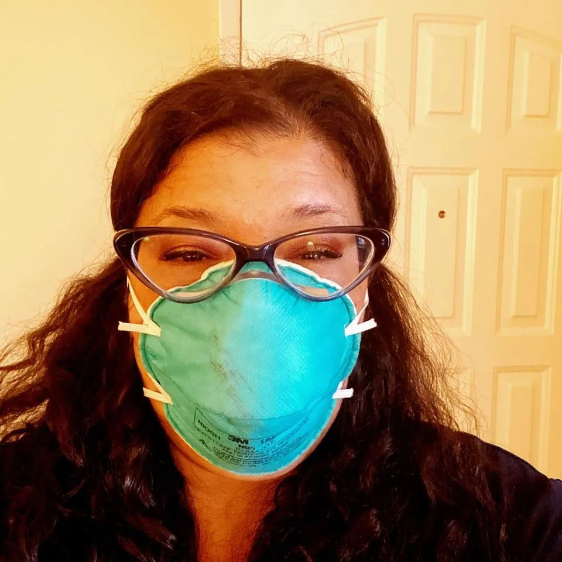
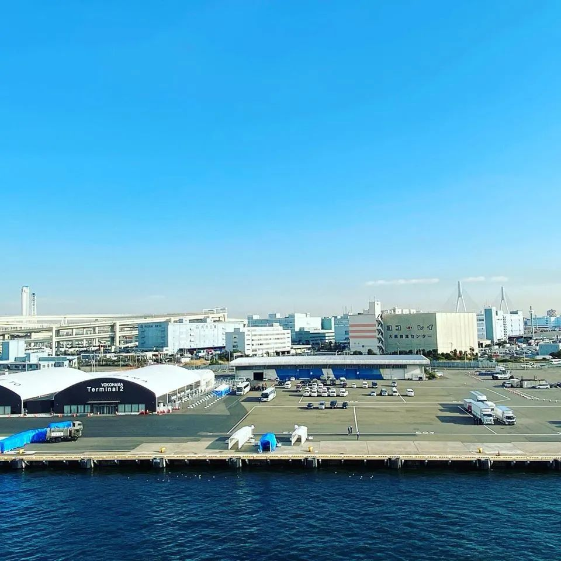
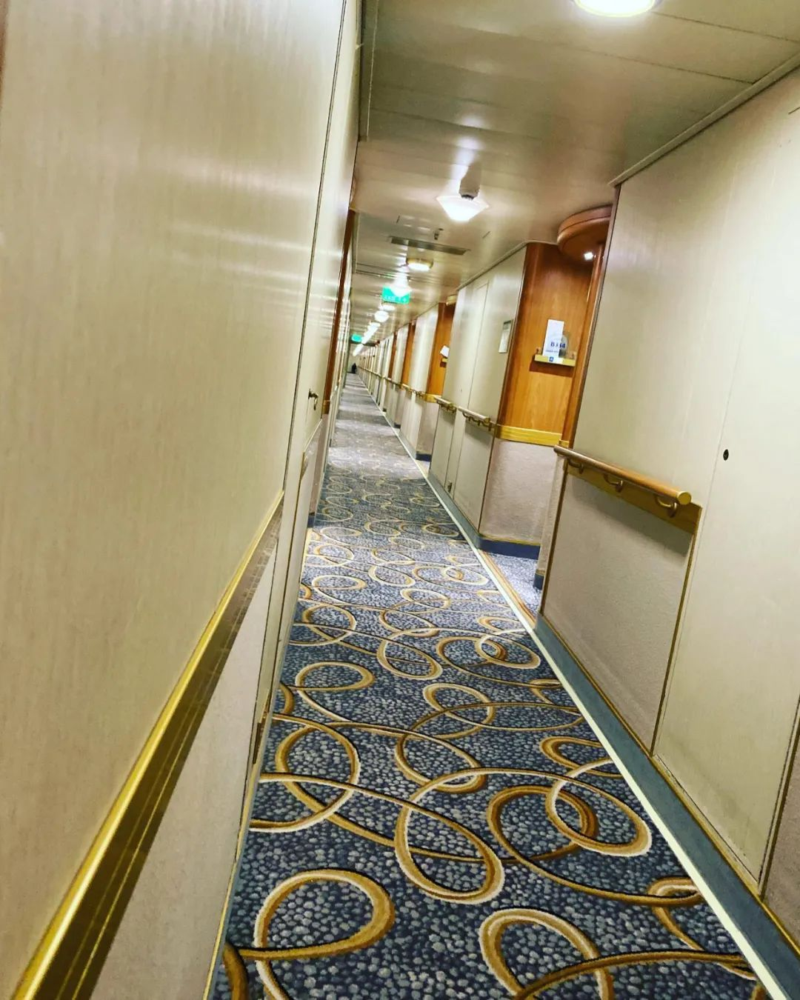
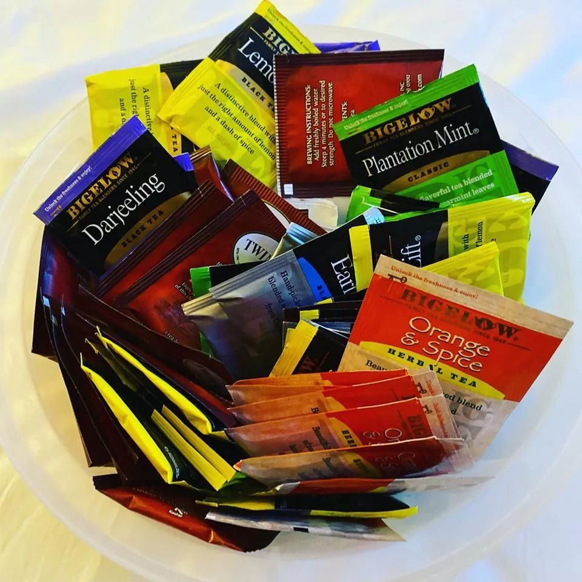
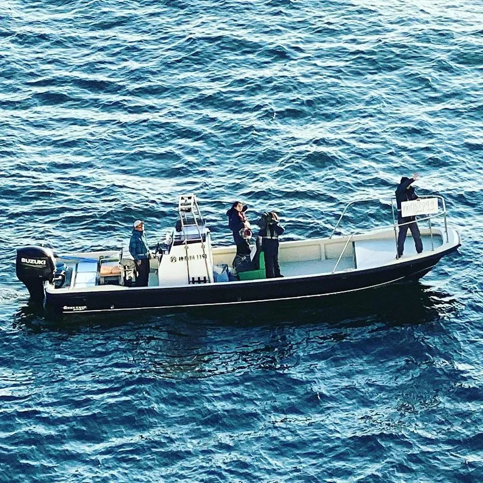
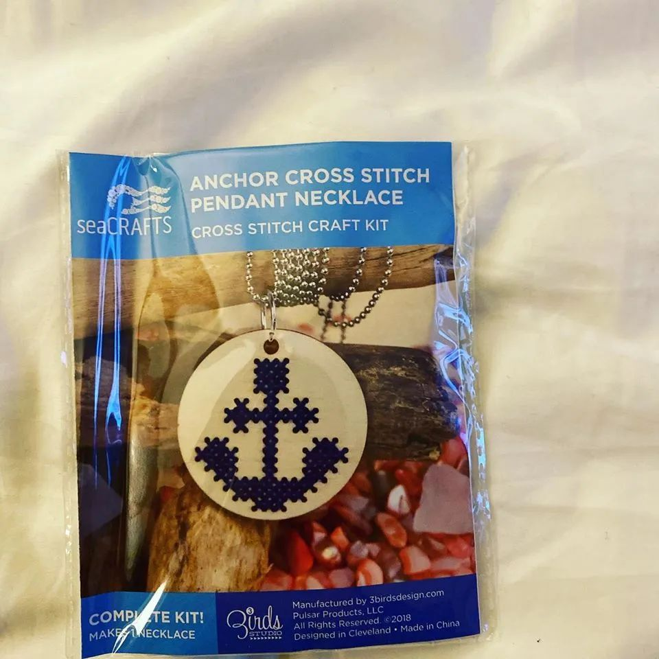
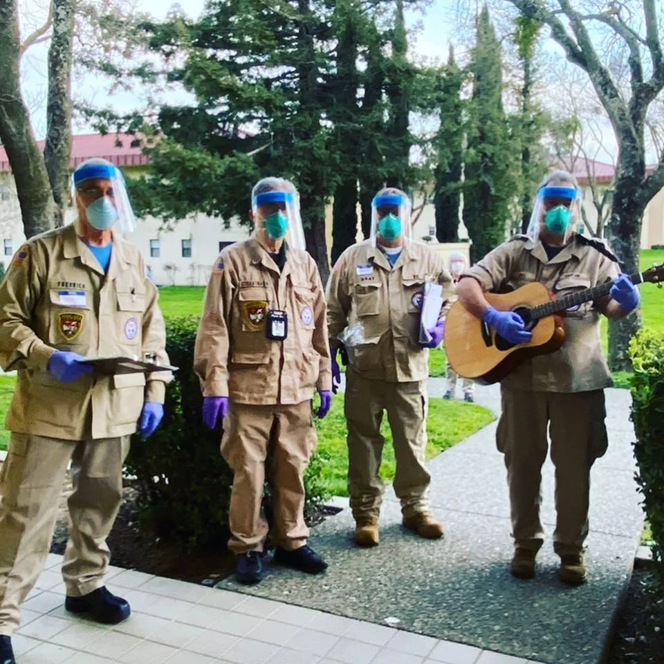
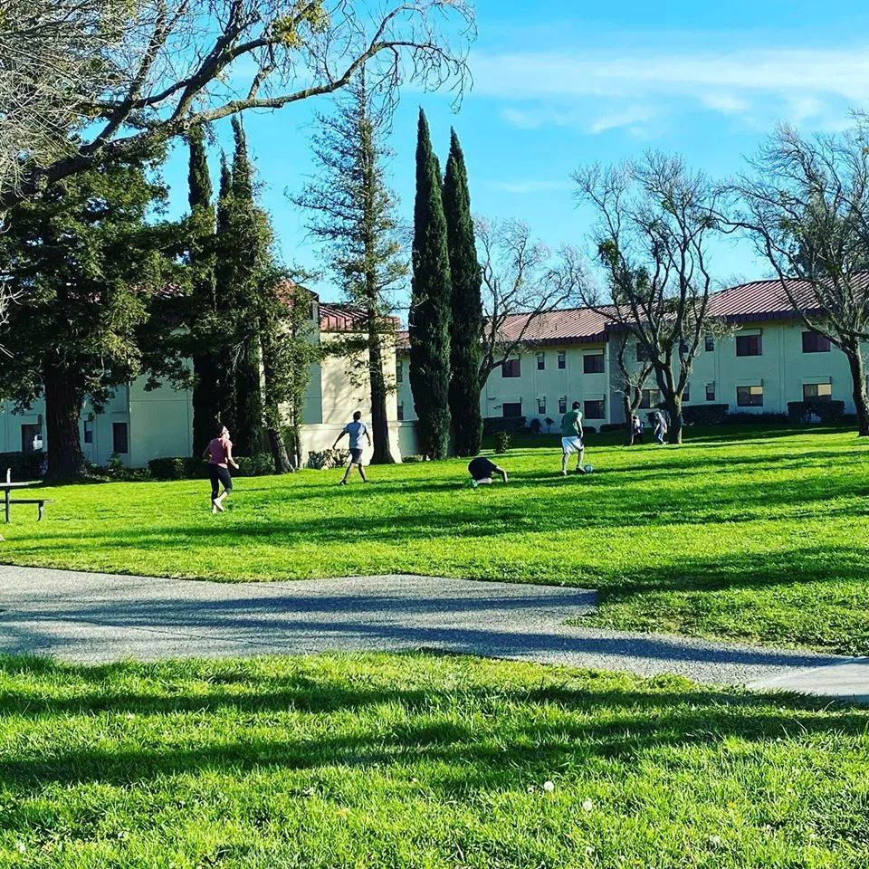

隔离中的“钻石公主号”乘客：每两天“放风”一次是最期待的事情
原文链接 备份链接 船上人们的焦虑也与日俱增。艾丽告诉新京报记者，“我们觉得自己不是在被隔离，而是等待着被感染。”和乘客相比，船员的住宿条件更差，艾丽住的员工宿舍两人一间，仅几平米，没有窗户。 全文6300字，阅读约需12.5分钟 1 …


3月1日，船长格纳罗·阿尔马成为最后一个走下钻石公主号的人。受访者供图
摘要：豪华邮轮“钻石公主号”犹如一座海上的五星级酒店。2月1日，随着一名香港乘客被确诊为新型冠状病毒肺炎，相继又有多人被确诊。这艘载有3711名船员和乘客的邮轮，其确诊人数一度成为全球第二，超过中国以外的任何一个国家，被媒体称为“海上监狱”。在没有任何心理准备的情况下，船长带领乘客开始了一场措手不及的隔离。
截至3月15日，最后下船的145人结束健康观察，病毒检测均呈阴性，16日起可依次回家，邮轮上共计712人确认感染新冠肺炎。美国乘客萨拉·阿拉纳 (Sarah Arana)为我们讲述了她在“钻石公主号”上以及回到美国空军基地隔离的全过程。
点击查看船长格纳罗·阿尔马的告别视频 视频来源：Princess Cruises Youtube频道
文｜陈腾
编辑｜林鹏
3月6日，在加利福尼亚一片无人的阳光沙滩上，萨拉看着从小和自己相熟的大海涌来、退去，她一呼、一吸。想到在不远处的茫茫海面上，正流浪着一艘感染了新冠病毒、前途未卜的至尊公主号邮轮，她深吸了一口气。萨拉刚从它的“姊妹”邮轮、属于同一品牌的钻石公主号归来，就是那艘满载3711个生命，有712个新冠肺炎确诊病例， 7例死亡，弥漫着病毒和恐怖幻想，差点就去地狱里溜了一趟的豪华邮轮。
对别人来说，钻石公主号是一艘冰冷美丽的船，生了病上不了岸。但对于萨拉来说，那是她在短短13天内硬活出了四部电影的地方：从日复一日重复人生的《土拨鼠之日》，到因逃不出被操控命运而绝望的《楚门的世界》，再到突然就陷入超现实惊悚世界的《阴阳魔界》，最后来到不知道何时会被选中、剔除、杀死的《饥饿游戏》。
此刻，顺着海水和鸟叫，萨拉试图舒缓那场厄运带来的创伤。潮起，汐落，大海用它日复一日的从容，教她在起伏不定的人生中保持镇定、保持呼吸。在这场本可以把她撕成两半的不幸中，53岁的她意外地发现自己比想象中更坚强。灾难大如泰山崩于前，但包裹在小小身躯里的柔软内心，总要拿些什么与之共处。

萨拉·阿拉纳 (Sarah Arana) 是一名拥有18年危机干预经验的社会工作者。受访者供图
以下内容根据萨拉·阿拉纳 (Sarah Arana)的叙述整理：
奢靡之旅
我经常独自做环球旅行，所以这次也不例外。朋友跟我说中国过年的时候，会有很多庆祝活动，所以我就特意选了这个时段来旅行。钻石公主号恰恰会在正月初一，停留在香港。所以我就花了2100美金，预定了1月20日－2月4日的邮轮。
钻石公主号从日本横滨出发，经过鹿儿岛，1月25日到达香港。但香港取消了所有的集会、焰火等庆祝活动，那时我真的非常失望。虽然没有去成，但我还是尽量对余下的行程抱着期待。
后来我们去了越南，划了皮艇；去台湾看了世贸中心，吃了水饺，还去了一家获奖餐厅喝了亚洲啤酒，我玩得还挺开心。船上的生活也很赞，钻石公主号是一艘很美丽的邮轮，我每晚都会去开放式巨幕前看电影，去大型剧场看一流的表演，还有赌场，龙虾，法式蜗牛和鱼子酱，船员的服务简直太好了。一切都高端大气上档次，这是我头一次坐邮轮，也是我这大半辈子做过的最奢侈的事情，堪称奢靡。
这段美好的旅程，在最后两天，突然变得很怪。就在我们即将回到日本横滨的时候，在香港下船的一个乘客被确诊了新冠肺炎，这导致日本政府拒绝我们驶进横滨港，钻石公主号只能暂时在离岸的海面上停着。

隔离检疫下的钻石公主号。图片来自网络
2月4日早晨6:30，来自意大利的船长阿尔马，正式宣布我们进入14天的强制隔离期，所有乘客只能呆在自己的客舱里面。最开始的时候我只是有点担心，并没有害怕。直到我看见日本的官员到船上来测量每个人的体温时，我才突然意识到，事情不妙了。
大家都很震惊，几乎没人相信眼下发生的事。乘客们马上组了一个脸书群，开始合力搞清疫情信息。邮轮有一面朝大海，一面朝陆地。朝陆地的乘客每天会数外面停了多少辆救护车，以知道那天有多少个确诊的人会被带走。然后他们会把这个信息分享在群里，让面朝大海的乘客知道。

2月11日，从萨拉的房间可以看到路上的救援车辆。受访者供图
唱歌跳舞敷面膜
隔离最难的地方，是长时间被困在客舱里，没什么活动。有的客舱连窗户也没有，乘客会很长时间呼吸不到新鲜空气。他们只能按轮船规定，轮流在固定时间去甲板上透气。我的房间有阳台，所以还可以站出去呼吸新鲜空气来舒压。
但回到客舱内，我又看到电视里全世界都在讨论着这个全新的、致命的病毒，确诊病例又在迅速增加。我第一次坐邮轮，第一次到日本，更不熟悉日本政府，所有这些未知都挤压在这封闭狭小的客舱里。事情突然完全不受我控制，我无助、绝望，但当下，我还是马上决定：如何应对，这是我唯一可以控制的。
这是一种应对技能和心态。在长达18年的时间里，我管理着美国 “火人节”的一个急诊医疗站，积累了许多危机干预经验。它们让我在面对这突然降临的灾难时，有足够的心理准备。（编者注：火人节是每年在美国黑石沙漠举行的反传统狂欢节。）
第一天开始隔离，为了打发无聊，我就在阳台上跳舞，头顶都是直升机不停的轰鸣声。如果你们看到邮轮照片里有人在跳舞，那估计就是我了。希望我的邻居们不会介意我没完没了地循环播放和放声歌唱各种美国乡村、流行、摇滚音乐。

萨拉在钻石公主号上的房间。受访者供图
到了第三天，（船上）新增了41例确诊病例。我们开始每天要量好几次体温。如果发烧，就要马上打电话给前台，他们就会安排我们下船。这天，我发现光靠我自己有点艰难。我决定去“独自旅行女性”的网络小组发发信息，看看有没人也在这艘船上，寻求点支持。
没有。
但在短短几小时内，2000多名来自世界各国的女性纷纷站出来，给了我很多支持和鼓励。那天，阿尔马船长也在广播里正式跟大家提到我们的脸书“乘客群”。他鼓励我们在群里互相支持、帮助和沟通。好的，就这么办吧！在他的引导下，我们拿起自己客舱里的电话，打给其他陌生乘客，互相安抚。和我沟通的比较多的有一家人，带着6岁的小孩，呆在没有新鲜空气的客舱。还有一个丈夫被确诊带走，自己留在船上的妻子。当然还有其他一些人，我们后来都成为了朋友。我们跟对方讲笑话、尽量笑、努力做到最好。我们还会和被确诊的人联络，知道了他们有被好好照顾，而且很多人只有轻微的症状，恢复得也很快。
同时，我一直跟自己说：“不要害怕，我没有害怕”。我让自己忙起来，研究草药、喝茶、在网上和朋友聊天、去阳台呼吸新鲜空气、晒太阳、还有敷面膜。我尽力把精力集中在保持乐观上，而不是被恐惧消耗，不让我的想法溜去黑暗的角落。
沉船噩梦
尽管如此，到第4－6天的时候，随着确诊人数迅速上升，大家开始变得很沮丧、很愤怒。
你根本不知道明天会发生什么。所有人最终都可以下船吗？我们甚至会想，日本有多少张病床可用。我听说，有两个被带去医院的病人，6个小时后就被送走了，因为东京和横滨所有的病床都满了。可我们的船上有3700多个人啊。我们都在想，天呐，万一检测出来感染了怎么办？更可怕的是，没有人知道病毒是怎么传播的。大家觉得是经过通风口，又或者，如果有人打开了房门，那病毒就会沿着走廊传播。

2月6日，萨拉偷偷打开门，看了看走廊。邮轮工作人员不允许乘客走出舱门。受访者供图
我哭了好几次，一个人在客舱里，身边也没有人可以说话。那时候大家想，是不是所有得病的人最后都会死掉。我们看到电视里中国的死亡数字越来越高，确诊越来越多，而同时你就待在这样一艘带着病毒、确诊人数也越来越高的船上。有天晚上，邮轮载着我们出海去取水和排泄的时候，天空电闪雷鸣。我真的想着，我是不是也要死了。
我一直做噩梦。梦里，钻石公主号驶出海，被刻意沉入海底，我永远没有离开日本，没有回到家人身边。
有天，我突然闻见通风口排出了一股很重的化学品味，然后我的眼睛和嗓子都疼得很厉害，有好几秒，我问我自己：“他们这是要毒死我们了吗？他们是不是害怕船上所有的人都会感染病毒，而他们不想再让病毒扩散，所以要把我们全部杀了，然后船驶出大海，让它沉下去？”
这个不是梦，这是我清醒时候发生的事。
整个过程非常紧张，但这种情绪是很难对外人准确传达的，它来来去去就像波浪一样，十分强烈、可怕。很多乘客过得非常挣扎和痛苦，有的乘客拒绝餐食，因为怕食物里有病毒；有的乘客说自己的降压药没了胸口疼、有的帕金森病药没了、有的因为肾痛在哭嚎、有的烟民无处吸烟发泄、有的隔壁乘客被确诊了自己心也慌了…… 他们心理遭受了很重的创伤，有的会得创伤后应激障碍，很需要心理治疗。

海上隔离期间，萨拉靠在阳台呼吸新鲜空气缓解压力。受访者供图
联合起来，面对今天
在这些伤痛、恐怖的噩梦、幻想、真真假假间，阿尔马船长会让邮轮的两面轮流朝海，这样乘客就能轮流看到大海，而不总是陆地上的一排排救护车。他每天都会频繁通过广播跟我们讲一些暖心的话，比如“我知道这对大家来说很艰难，我很抱歉，我们和你们在一起”，“100%的空气都是净化过的，病毒不会靠通风口传播”，“我们会努力做到我们能做得最好”，或者“我的角斗士们，让我们联合起来，面对今天”。这些话对我们来说，就像每天的救命稻草一样。
为了缓解我们的压力，他还给我们放了很多新电影，送我们拼图、游戏、日本手工折纸、还有保温壶、合味道方便面等。那个和我一直在互相支持的、带着6岁孩子的爸爸，告诉我他们收到了邮轮送的玩具、乐高、糖果、还有冰激凌。孩子高兴坏了，等终于轮到他们去甲板上透气时，孩子都不愿意出门。
现在倒回来看，阿尔马船长当时也被隔离着，但是他还一直在工作。钻石公主号是他的船，他需要跟日本政府、厚生劳动省、全体船员、以及各国使馆沟通各种大事小事，还要面对船上2600多个被吓坏了的、哭泣的、愤怒的的乘客，以及他们无止尽的问题。但他从来不发脾气，也从不对谁无理。在船上的所有时间，他都用正直和尊重来对每件事、每个人，举止十分有风度。
在他的带领下，1000多名船员在高压下的表现依然非常好。在那些我们和船员一样都要面对隔离、病毒和死亡的日子里，我有时只想躺下，靠倒立来帮助我放松冷静，但船员们还得继续工作，一个客舱接一个客舱地去服务。
比如一日三餐的供应。邮轮上的乘客分布在15层，要给这么多人送餐，其实是一件非常非常难的事。
隔离到第9天的时候，我客舱里的茶快喝完了。没茶对我个人来说，绝对是危机。我问船员可不可以从厨房拿一点茶给我。后来那个船员敲了我的门，跟我说：“我不知道你喜欢哪种，所以我把所有的种类都带来了”。我太高兴了。

船员送萨拉的茶。受访者供图
同样也在那艰难的第9天，我收到了“独自旅行女性”小组里，多达5000多名来自世界各地的女性的支持！哇！我太感动了。
每分钟，所有涌来的支持都让隔离的感受变得十分不同。虽然各种心情来来去去十分强烈，就像过山车一样，我也尽力把精力都集中在我感受到的爱上，比如有个非常友善的日本媒体船，每天会打出希望和鼓励的标志。再比如有天，有35名医生和45名护士上船来帮助我们，他们全都是志愿者，就这样把自己暴露在危险之中。我对他们的同情心和服务意愿充满敬意。
我让这些爱激励着我，坚持下去。我跟自己说，这个过程虽然漫长，但总会有结束的一天。

每天都会打出励志标语的日本媒体船。受访者供图
凌晨2点，“欢迎回家”
尽管如此，隔离期的最后几天，整只船都闷在抑郁之中。越来越多人开始给自己的使馆打电话——美国，加拿大，澳大利亚，英国，强烈地表达我们撤侨的需要，因为我们不能再在船上呆着了。我想在船上隔离，是一个十分糟糕的决定。虽然船上有很多人，我也知道这样做会很难，但我还是觉得我们得下船去别的地方隔离。
船员给我拿来了当地的报纸，钻石公主号的照片被印在了头版。这对于在船上的我来说，太不真实了。虽然船的照片看起来很熟悉，但是它周围浮动着这么多迷雾，黑暗且神秘。
隔离结束前，美国国务院终于确认要来撤侨了。但前提是回到美国后，我们还需要再被隔离14天，以防病毒传播。有些乘客听到回美国后还有14天的隔离期，很沮丧。不过我能理解这个决定，如果这样可以救起一个生命，那14天的时间就是值得花的。这也是我身为公民的责任。
我终于要回家了。我没办法停止哭泣。

钻石公主号登上了媒体头版。受访者供图
2月14号情人节，船员给所有乘客送了玫瑰和巧克力。船长阿尔马给大家读了一首圣经中的诗：“爱承载万物、相信万物、期盼万物、忍耐万物。爱永不落败。我祝大家情人节快乐。”当晚，我百感交集。很快就要离开那只船了，我终于松了口气的同时，也有点伤心。这很难解释。就像我在离开前，船员又给我送了个礼物，是个船锚十字绣，亲手绣好后就可以当项链挂起来，我很喜欢。
撤离发生在2月16日深夜，所有事情都比预计的时间长。
撤离全程十分混乱，我们分坐在7辆大巴上，看着两架空飞机就在远处停着，但我们硬是坐着等了5个小时，登不了机。晚上也看不太清周围发生了什么，更不知道发生了什么事。
不过现在我知道了。因为当我们的飞机落地美国加州后，我打开手机，看到铺天盖地的新闻，才知道那是因为撤离时，日本官员突然出现，说检测结果出来了，撤侨人员中有14例确诊。美国国务院坚持要带确诊人员回国，而美国疾病防控中心则坚持拒绝，他们一直在争执。但最后明显国务院的人赢了。
但撤侨全程，没人告诉我们飞机上有确诊病例。这些争执我们也都没看见。在大使馆给我们的几封撤侨邮件里，他们反复强调不会带确诊病例或有症状的人回国，所以大家才决定搭乘撤侨飞机。我不知道确诊病人就坐在飞机上塑料帘子的背后。我甚至不知道那里有人。那可是10个小时的飞机啊，这意味着我们在汽车和飞机上都暴露在有病毒的环境之中。
因此当下了飞机，手机推送说机上有确诊病例的时候，很多人非常恼火。我的第一反应是，他们是美国公民，带他们回家确实是应该的，他们应该和家人在一起，在自己的国土上得到治疗。我是坚信这点的。
虽然过程不太顺利，但当我们落地后，疾病防控中心、卫生和福利部、全球移民及检疫处、还有不同的军方人员，都在飞机门口站成了一排迎接我们，标牌上写着“欢迎回家”，每个人都非常温暖和热情。虽然我们十分疲惫，但很感动。我以前也听过“欢迎回家”，但这次不同，这次十分诚恳，我骨子里都能感觉到。我永远不会忘记这些。那是凌晨2点。

2月15日，撤离之前，船员送萨拉的十字绣。受访者供图
陌生人的礼物
在特拉维斯空军基地的日子好多了，虽然我们还是在被严格的隔离中。我们可以出外散步，只是大家互相之间都要保持距离，没人可以碰我们。这和船上的隔离很不一样。当时我们总在水上，可以感觉到水的流动，而且客舱很小。现在我们回到自己的国家，没有语言隔阂，而且在大地上了，也有了更多空间，还可以出去走走，锻炼一下，整体好多了。
可能很多人会觉得这还是挺放松的。其实也不是，因为一直有人会来敲门，送饭、量体温、传达信息、或者问问题，其实并不放松。
2月20日是我的生日，是很艰难的一天。我本来应该和我的家人在一起，但因为隔离，这些聚会全部取消了。我把所有的东西都关掉，自己一个人静静地坐着，彻底安静。过了一会儿，门口有敲门声，我没去开。过了很久，又有敲门声。是卫生部的人，他们每天都会来给我量两次体温。
有一个人让我走出来。他们从来没有叫我出去过。我的心都沉了！我知道我就要被人带走，坐“免费”的车，然后去某个透明光亮的实验室。我几乎都要开始哭了。
当我走出房间的时候，他们竟然开始给我唱生日快乐。有一个人拿着一把吉他，听起来就很像彩排好了才来的。天啊，这些穿制服的卫生部工作人员在给我唱生日快乐？他们送了我电子的纸牌游戏还有纸杯蛋糕。然后就离开了。过了一会儿，又有人来敲门，他告诉我把门开着，然后往我房间里卸了一堆又一堆的快递礼物。有些是看了我在脸书的疫区日记，给我送支持的网友们送来的。
我找不到话来形容这个经历对我的触动有多深，谢谢他们的善良，大方和爱。谢谢。

为萨拉唱生日歌的工作人员。受访者供图
3月1号，隔离终于到了最后一天，我们竟然收到了船长阿尔马发来的告别视频。又听见了那个再熟悉不过的钻石公主号船长的声音，我竟奇怪地被安慰到了。
船长是最后一个走下钻石公主号的人，当我看到那张他离开的照片时，我彻底崩溃了。这会儿我已经被带回美国，在一个挺不错的军事基地酒店隔离了十多天，但是天啊，他竟然才离开那艘船。看着船长穿着他的制服，胳膊夹着他的船长帽，虽然还带着口罩，但看起来依然保持乐观，我哭了。太难想象了，他真的做得太好了。就让这张照片成为我这次疫情日记的终结照吧。谢谢你，阿尔马船长。
如果有一天我要再搭一次邮轮的话，我一定想都不想，去搭他的邮轮。
隔离终于结束了，我逐渐回到日常生活里来。我是单身，以前经常独处。在这个世界生存，会有负面和可怕的时候，很多人在挣扎和受苦。但是这次，不是某个个人，而是几千个陌生人，他们一起支持我，甚至给我寄礼物，让我要坚持。这些人组合在一起涌来爱，我的内心完全被撬开了。这些世事的转变，修复了我对人的信心，给了我很多力量和勇气，去更加乐观地生活下去。我真的很想把这个势头持续下去，给世界带来一些改变，无论是通过写博客或者写书的方式。因为这个世界上还有很多美好的东西。

2月24日，隔离在空军基地的人一起踢球，来缓解等待检测结果的焦虑。受访者供图
最后，我很想让中国的读者知道，我和你们在一起。我不想让中国人民觉得所有人都会因为这个病毒讨厌你们，责怪你们。我知道确实有一些歧视，我有揭发过这种歧视，其他人也有揭发这种歧视。我想让你们知道，我们爱你们。我知道这不是你们的错，你们也在承受这些厄运。保持乐观，这些都会过去的，希望我们能够重新建立起信任。我的心与你们同在。
Ps. 2月9号，钻石公主号宣布给乘客全额退款，包括机票、酒店、地面交通、上岸游览项目、小费，以及其他消费。小费虽然会退回给乘客，但公司会支付给船员他们已得的小费。所有乘客还将得到另一次全额免费旅行。隔离期间所有费用不计。
钻石公主号船长格纳罗·阿尔马，因为这次的表现，被意大利人称为“英雄船长”，称他体现了意大利人永不放弃的精神。阿尔马在3月1日成为最后一个走下钻石公主号的人，他将被意大利总统授予最高国家级勋章——意大利共和国指挥官荣誉勋章。今年44岁的他，在领导3710个生命度过黑暗的隔离期时，经常鼓励大家:“钻石，是一块在高压下表现卓越的碳”。
后台回复”读者群”, 加入更多讨论
陈腾

驻纽约纪录片导演、记者
她的新片《成为母亲》正在拍摄中。
如有兴趣联系她，请在后台留言，并说明身份、来意，以方便转告。

小昼
长按二维码向我转账
受苹果公司新规定影响，微信 iOS 版的赞赏功能被关闭，可通过二维码转账支持公众号。
原文链接 备份链接 船上人们的焦虑也与日俱增。艾丽告诉新京报记者，“我们觉得自己不是在被隔离，而是等待着被感染。”和乘客相比，船员的住宿条件更差，艾丽住的员工宿舍两人一间，仅几平米，没有窗户。 全文6300字，阅读约需12.5分钟 1 …
原文链接 备份链接 图片来源：CNN “ 有报告指出，根据发病日期来看，在邮轮实施隔离措施后，乘客之间的传染有所减少。在隔离期后期，感染主要发生在船员之间以及客舱之内。 ” 继昨天443名检测呈阴性的乘客离开“钻石公主”号邮轮后，600多 …
原文链接 备份链接 钻石公主号邮轮在全球新冠疫情中是一个特殊又典型的样本：由于邮轮的封闭环境，它成为了传染集中暴发地，证明了全人类的普遍易感性；这又是一艘停靠在日本、船籍是英国、运营主体属于美国的邮轮， …
原文链接 备份链接 以下文章来源于私家地理 ，作者私家地理 [私家地理 点亮旅行灵感，始于2005——澎湃新闻出品](#) 澎湃新闻记者 王昱 Imy不知道是否该庆幸自己的“幸运”。 2月5日，当全球的视线都聚焦在这艘停靠在横滨港口的邮 …
原文链接 备份链接 目前国际上并没有关于船旗国或其他国家政府需要在此类事件中分担责任的规则。巨型豪华邮轮百慕大籍“钻石公主号” 接受记者采访前，来自香港的杨先生和夫人进行了咽拭子采样。日本政府派出的医生对他们说，等两到三天后检测结果出来， …